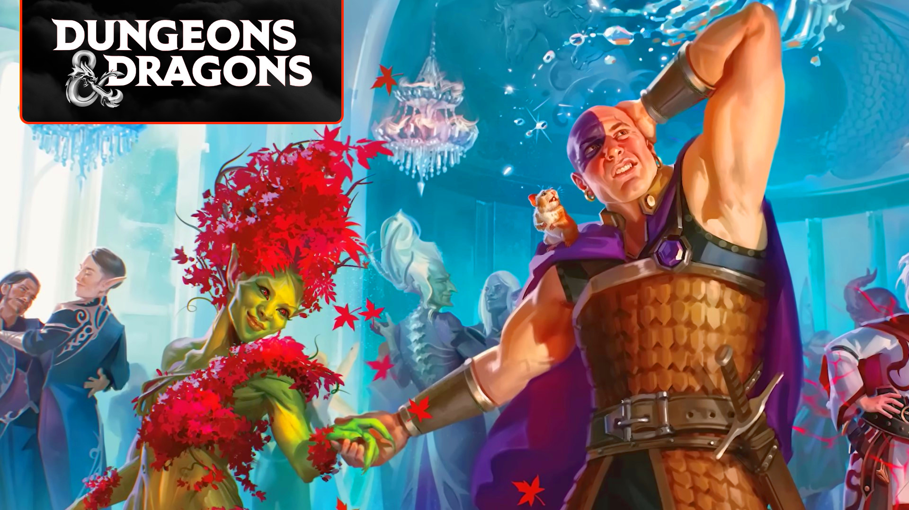
All DnD races and species explained
DnD races represent the different species found in the world's oldest tabletop RPG. Your DnD species (as they're also called) decides your appearance and culture, but it also determines rules-relevant facts about your size, speed, and abilities. In the 2014 version of the rules, the Dungeons and Dragons races also grant certain ability score increases. This guide explains each of the 5e races, from the core Player's Handbook options to the rarer species found in supplementary books.
In the 2014 version of DnD, your choice of race was the second most important factor for building your character - after choosing one of the DnD classes - because it granted those all-important ability score increases. In the new rules, the DnD backgrounds decide your character's ability score increase and which of the DnD feats they start with.
This makes your choice of species less critical when optimizing your DnD character builds. It also means that there are often multiple versions of the same species in D&D. We've largely presented the rules for 2024 species here, though we will cover ability score increases granted by the 2014 rules, in case you're still using these.
How many DnD races are there?
There are 10 DnD races in the 2024 Player's Handbook, while the 2014 Player's Handbook features nine. Many of the 2024 species are updated versions of those found in the 2014 rules, but some options have been swapped. The biggest change is that the Half-Elf and Half-Orc from 2014 were replaced with the Orc, the Goliath, and the Aasimar in 2024.
Beyond the core DnD books, there are an additional 45 'fantastical' races, including lineages, which are variants on existing species. This doesn't factor in options from third-party Dungeons and Dragons books, or species found in non-book supplements - there are so many more.
The core DnD races are:
The rarer DnD races include:
- Aarakocra
- Astral Elf
- Autognome
- Bugbear
- Centaur
- Changeling
- Deep Gnome
- Dhampir
- Duergar
- Eladrin
- Fairy
- Firbolg
- Genasi
- Giff
- Githyanki
- Githzerai
- Goblin
- Hadozee
- Harengon
- Hexblood
- Hobgoblin
- Kalashtar
- Kender
- Kenku
- Kobold
- Leonin
- Lizardfolk
- Loxodon
- Lupin
- Minotaur
- Owlin
- Plasmoid
- Reborn
- Satyr
- Sea Elf
- Shadar-kai
- Shifter
- Simic Hybrid
- Tabaxi
- Thri-kreen
- Tortle
- Triton
- Vedalken
- Verdan
- Warforged
- Yuan-ti
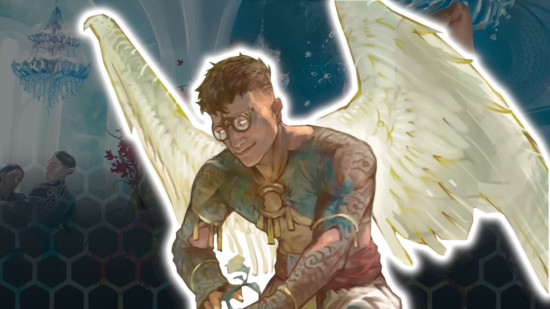
Aasimar
| Size | Medium or small |
| Speed | 30ft |
| Ability scores | +2 and +1 two different stats, or +1 any three (2014 rules only) |
| Best for | Cleric, Warlock, Paladin |
| Sourcebooks | Player's Handbook (2024); Mordenkainen Presents: Monsters of the Multiverse (2022); Volo's Guide to Monsters (2016) |
Thanks to a shared ancestry with celestials, each Aasimar is blessed with divine looks and abilities. They're naturally resistant to necrotic and radiant damage, plus they're gifted healers who can roll d4s equal to their proficiency bonus to restore a creature's HP.
All Aasimar can cast the Light cantrip using Charisma as their spellcasting modifier, which implies the optimal builds for this species rely on that stat. However, if you're happy to sacrifice this (very situational) cantrip, an Aasimar can excel in any D&D class.
The Aasimar's most explosive feature is Celestial Revelation. When activated, this can give your Aasimar a fly speed, create a ten-foot emanation of light that deals radiant damage, or force enemies to make a Charisma save or become frightened. Whichever form they take, it lets the Aasimar deal additional radiant or necrotic damage when they attack.
Learn more in our full Aasimar species guide.
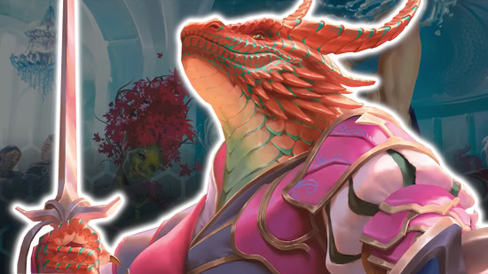
Dragonborn
| Size | Medium |
| Speed | 30ft |
| Ability scores | +2 Strength, +1 Charisma (2014 rules only) |
| Best for | Paladin, Barbarian, Warlock |
| Sourcebooks | Player's Handbook (2024); Player's Handbook (2014) |
Dragonborn resemble humanoid dragons, though D&D lore flip-flops on exactly how this species got its draconic features. However it happened, the Dragonborn's scaly, wingless appearance makes them one of the most recognizable species.
Their signature Breath Weapon helps in that department, too. Able to exhale a force of destructive energy that deals 1d10 damage on a failed Constitution saving throw, they've got an ace in the hole straight out of the gate. Its damage and difficulty class will increase as they level up, and your choice of Draconic Ancestry will determine its damage type, as well as your character's damage resistances.
The Dragonborn also benefits from 60 feet of Darkvision. More excitingly, once they reach level five, they can grow wings as a bonus action to gain a fly speed. We'd recommend this species for martials that usually lack ranged options and mobility.
Learn more in our DnD Dragonborn species guide.
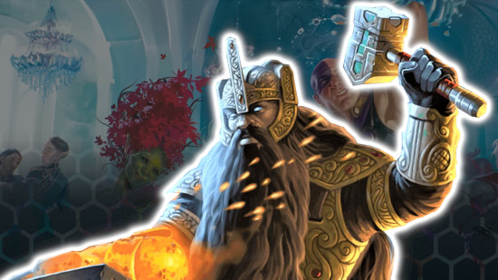
Dwarf
| Size | Medium |
| Speed | 25ft (2014) or 30ft (2024) |
| Ability scores | +2 Constitution (2014 rules only) |
| Best for | Cleric, Fighter, Barbarian, Druid |
| Sourcebooks | Player's Handbook (2024); Player's Handbook (2014) |
Originally members of cave-dwelling clans, the DnD Dwarf species has a reputation for durability and a handy way with stone. Mechanically, this manifests as a resistance to poison damage and advantage on saving throws against being poisoned.
Dwarfs also have the Dwarven Toughness feature, which automatically increases their maximum hit points by one, and it does so again with every DnD level up. It doesn't get much more durable than that. Unsurprisingly, the classes that tend to suit a Dwarf are those looking to keep themselves standing on the front lines of battle.
Beyond this, a Dwarf's skills are defined by their ancient tendency to yearn for the mines. They have extended Darkvision (120ft rather than the standard 60ft) and tremorsense for 60 feet instead of enhanced History rolls when checking out pieces of rock - far more useful, if you ask us.
Learn more in our complete DnD Dwarf guide.
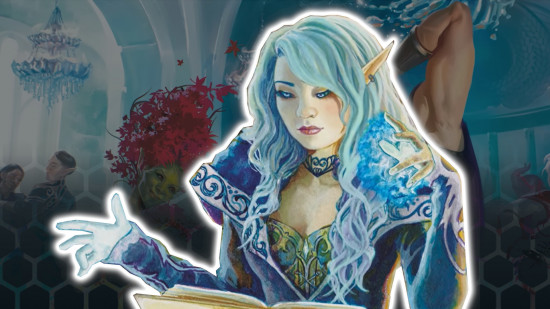
Elf
| Size | Medium |
| Speed | 30ft |
| Ability scores | +2 Dexterity (2014 rules only) |
| Best for | Rogue, Ranger, Wizard, Warlock |
| Sourcebooks | Player's Handbook (2024); Player's Handbook (2014) |
Tall, sleek, and pointy-eared, The DnD Elf is a graceful being, most at home in ethereal forests. Their Darkvision and proficiency in either Insight, Perception, or Survival make them excellent stealthy scouts. Elves also have advantage on saving throws against being charmed, and they enter trances instead of going to sleep at night.
Each Elf has an Elven Lineage that decides some of their natural abilities. This makes the Elf an immensely flexible species, perfect for many kinds of characters (though, most of the time, we tend to recommend it for spellcasters).
Drow have enhanced Darkvision, and they can cast Dancing Lights, Faerie Fire, and Darkness. High Elves know Prestidigitation, Detect Magic, and Misty Step - though they can swap the cantrip with another from the Wizard spell list each day. Wood Elves have a base speed of 35 feet, as well as the ability to cast Druidcraft, Longstrider, and Pass Without Trace.
Learn more in our DnD Elf species guide.
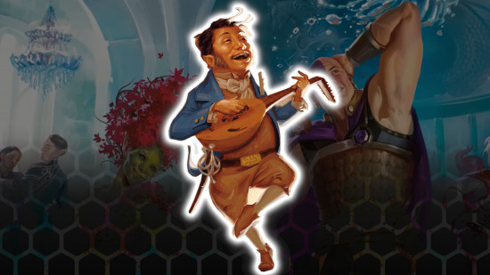
Gnome
| Size | Small |
| Speed | 25ft (2014) or 30 feet (2024) |
| Ability scores | +2 Intelligence (2014 rules only) |
| Best for | Wizard, Rogue, Artificer |
| Sourcebooks | Player's Handbook (2024); Player's Handbook (2014) |
Vibrant and expressive, DnD Gnomes are often styled as a curious and cunning race that enjoys the thrill of adventure. However you choose to roleplay them, all Gnomes gain the same basic benefits - Darkvision, plus advantage on all Intelligence, Wisdom, and Charisma saving throws.
When you decide to play a Gnome, you'll choose a specific Gnomish Lineage. Forest Gnomes are illusionists who can speak to small beasts (often without wasting a spell slot). Meanwhile, Rock Gnomes can cast Mending and Prestidigitation, and they can still tinker with tools to create a small mechanical device.
A species that gains extra spells is usually a surefire pick for a spellcasting class, as it beefs up their existing repertoire. The Rogue is our wildcard suggestion, though. Gnomes are great at finding non-violent solutions to problems, which pairs well with the Rogue's utility-focused approach.
Learn more about this species in our DnD Gnome guide.
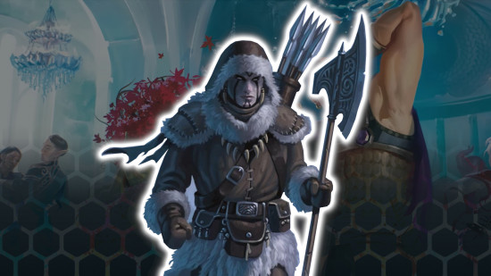
Goliath
| Size | Medium |
| Speed | 30 feet (2014) or 35 feet (2024) |
| Ability scores | +2 and +1 two different stats, or +1 any three (2014 rules only) |
| Best for | Barbarian, Fighter |
| Sourcebooks | Player's Handbook (2024); Mordenkainen Presents: Monsters of the Multiverse (2022); Volo's Guide to Monsters (2016) |
A DnD Goliath may only be slightly bigger than your average human, but they have strength that rivals their Giant ancestors. They're as durable as granite, and they make for great martial characters.
The Goliath has advantage on checks against the grappled condition, and from level five onwards, they can become Large for 10 minutes, which gives them advantage on Strength checks and increases their speed by 10 feet, as well as greatly enlarging the area they affect in combat. Hulk, smash!
Additionally, the Goliath chooses one ability that's unique to their Giant Ancestry. This might allow them to teleport as a bonus action, deal extra damage, slow or knock enemies prone, or even reduce the damage the Goliath takes. Giant Ancestry is so versatile that you could play six or seven Goliaths and not have one feel same-y.
Learn more in our DnD Goliath guide.
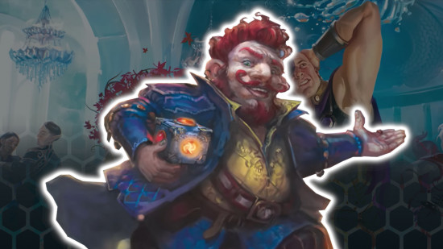
Halfling
| Size | Small |
| Speed | 25ft (2014) or 30ft (2024) |
| Ability scores | +2 Dexterity (2014 rules only) |
| Best for | Rogue, Ranger, Bard |
| Sourcebooks | Player's Handbook (2024); Player's Handbook (2014) |
Halflings are almost identical to the Hobbits of Tolkien's Middle-earth, though without the thick foot hair and round front doors. Living in peaceful, bucolic communities usually hidden from the conflicts of the world, they're cheerful and curious.
Halflings are extra nimble, able to move through the space of any creature that's at least one DnD size larger than them. They're also brave, with advantage on saves against the frightened condition, and lucky, meaning they're able to reroll any 1 on a d20. As well as luck and courage, Halflings have stealth to fall back on, as they can Hide as long as they're obscured by a creature at least one size larger than them.
All kinds of characters benefit from extra luck, but we tend to build Halfling characters that get maximum value from their stealth and mobility. That means Scout characters and anyone who needs an easy way to escape mid-fight.
For a full description, check out our DnD Halfling guide.
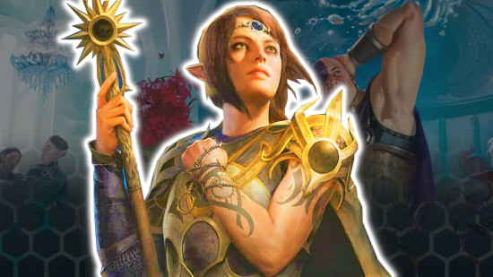
Half-Elf
| Size | Medium |
| Speed | 30ft |
| Ability scores | +2 Charisma, +1 any other stat (2014 rules only) |
| Best for | Bard, Sorcerer |
| Sourcebooks | Player's Handbook (2014) |
Born of Human and Elf parents, DnD Half-Elf characters take bits from both of their ancestral lines. Thanks to their Elf lineage, they have Darkvision and are immune to being put to sleep. They also have the versatility of Humans, which gives them proficiency in two extra DnD skills.
Like Elves, Half-Elves have a subrace that can give them further powers. However, if you want to take the optional features of a Drow, High, or Wood Half-Elf, you must sacrifice the extra skill proficiencies granted by your Human ancestry. In their place, you can learn additional spells, become trained in additional weapons, or gain a swimming speed.
Species of dual parentage like the Half-Elf and the Half-Orc (who we'll discuss in a moment) weren't included in the 2024 Player's Handbook, so you'll only have the 2014 version to work with. Still, their flexible DnD stats and skills make them strong Charisma casters. The Bard is our top choice of class for the species overall.
Want to learn more? Here's our full DnD Half-Elf species guide.
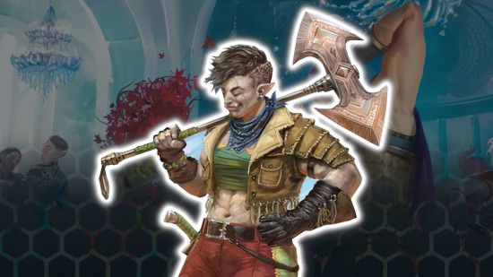
Half-Orc
| Size | Medium |
| Speed | 30ft |
| Ability scores | +2 Strength, +1 Constitution (2014 rules only) |
| Best for | Barbarian, Fighter |
| Sourcebooks | Player's Handbook (2014) |
With Orc and Human blood running through their veins, Half-Orcs partially resemble the classic Tolkien-esque creatures. They're physically mighty, and they may have visible teeth and green-ish skin.
Their famed physical might is realized through their Relentless Endurance and Savage Attacks. The first ability means that, should a Half-Orc be downed in battle, they can immediately bounce back with one HP. Savage Attack, meanwhile, lets them roll an additional attack die whenever they land a critical hit - perfect for massive bursts of damage.
Like the Half-Elf, the Half-Orc was left out of the 2024 rules update. However, you can still shoehorn them into your games thanks to backwards compatibility. Whether you use their associated ability score increase or not, Half-Orcs are best suited to melee-based martial classes.
Here's a complete guide to the DnD Half-Orc that can tell you more.
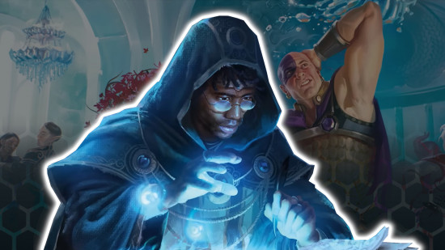
Human
| Size | Medium or small |
| Speed | 30ft |
| Ability scores | +1 in all stats, or +1 in two stats plus a feat and skill (2014 rules only) |
| Best for | All |
| Sourcebooks | Player's Handbook (2024); Player's Handbook (2014) |
DnD Human characters are variable and adaptable folks, who ambitiously explore the land for both personal gain and altruistic devotion. Their lives are short, but their empires are enormous.
Humans are by far the most versatile of the common species. The 2014 version gives you complete control over your ability score increases, and the popular Variant Human gains a feat for free straight out of the gate.
In the 2024 rules, every character gains a free DnD 2024 feat at level one, but the Human can choose a second feat. They also start with an extra skill proficiency, and they gain Inspiration whenever they finish a long rest. Whichever version of the Human you're planning to use, they're an excellent choice for basically any class.
Learn more in our DnD Human species guide.
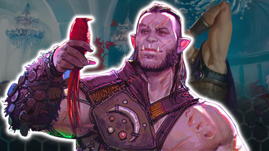
Orc
| Size | Medium |
| Speed | 30ft |
| Ability scores | +1 and +2 any two stats or +1 any three (2014 rules only) |
| Best for | Paladin, Cleric, Fighter |
| Sourcebook | Player's Handbook (2024); Mordenkainen Presents: Monsters of the Multiverse (2022); Eberron: Rising from the Last War (2019) |
While they're stereotyped as villains in a lot of fantasy media (including past editions of D&D), the Orc 5e has as much right to be a heroic adventurer as anyone else. The Half-Orc's large teeth, green skin, and physical might are all inherited from this species.
An Orc is best known for their imposing strength. Like the Half-Orc, this is represented by the Relentless Endurance ability, which lets them drop to one hit point instead of zero if they are downed in combat. Additionally, Adrenaline Rush lets them dash as a bonus action, Rogue-style, and it gives the Orc temporary HP equal to their proficiency bonus.
Orcs are a natural choice for Strength-based martial builds, though always going for Strength-based builds might start to feel a bit same-y after a while. If you want to shake it up, any fragile spellcaster would appreciate abilities that help them to avoid death.
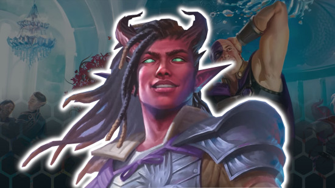
Tiefling
| Size | Medium or Small |
| Speed | 30ft |
| Ability scores | +2 Charisma, +1 Intelligence (2014 rules only) |
| Best for | Warlock, Sorcerer, Wizard |
| Sourcebooks | Player's Handbook (2024); Mordenkainen's Tome of Foes (2018); Player's Handbook (2014) |
Tieflings have a unique appearance, thanks to their horns, tails, and vibrantly colored skin. These traits come from their ancestry, as somewhere along the line a devil, demon, or yugoloth joined or afflicted their family. This heritage also provides them with resistance to certain DnD damage types and extra spellcasting abilities.
While there are a vast number of Tiefling variants in D&D's many books, the 2024 variant of 5e presents three. Abyssal Tieflings are resistant to poison damage, and they learn Poison Spray, Ray of Sickness, and Hold Person. Chthonic Tieflings are resistant to necrotic damage, and they learn Chill Touch, False Life, and Ray of Enfeeblement. Finally, Infernal Tieflings have fire resistance, and they'll learn Fire Bolt, Hellish Rebuke, and Darkness.
Learn more in our Tiefling 5e and DnD 2024 Tiefling guides.
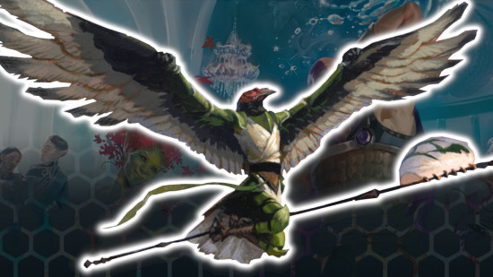
Aarakocra
| Size | Medium |
| Speed | 25ft (walking); 50ft (flying while not wearing medium or heavy armor) |
| Ability scores | +2 and +1 two different stats, or +1 any three |
| Best for | Ranger, Rogue, Fighter |
| Sourcebooks | Mordenkainen Presents: Monsters of the Multiverse (2022); Elemental Evil Player's Companion (2015) |
The standout feature of the bird-like Aarakocra is their flight. With a large pair of feathered wings sprouting from their back, they were the first playable D&D race that could fly, letting them soar above enemies to pick them off from afar. They have a natural +2 Dexterity and +1 Wisdom increase, and they also sport a pair of talons that let you deal damage equal to 1d4 + your Strength modifier.
Given their natural Dex increase, an Aaarakocra can make a brilliant DnD Ranger, especially if paired with the Archery fighting style to make use of their mobility. The DnD Rogue is also a good choice, as Flight lets you hop about hiding places with even more ease. If you want a more martial build, go for a DnD Fighter specializing in Finesse weapons. Flight will help you traverse the battlefield.
For a full run-through of the best Aarakocra names, classes, and builds, check out our full Aarakocra 5e species guide.
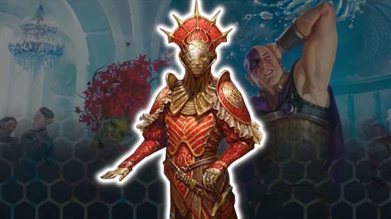
Astral Elf
| Size | Medium |
| Speed | 30ft |
| Ability scores | +2 and +1 two different stats, or +1 any three |
| Best for | Bard |
| Sourcebooks | Spelljammer: Adventures in Space (2022) |
The Astral Elf 5e comes from literal, actual space (or the Astral Plane, as D&D calls it). They have many of the standard Elf's abilities, including Darkvision, advantage on saving throws against being charmed, and the ability to go into a trance rather than sleep. Starlight Step also lets them teleport 30 feet as a bonus action, and they're naturally proficient in Perception.
The Astral Trance is a bit different from the respite that other Elves get. Whenever you finish a trance, you gain proficiency with one skill and weapon/tool from the Player's Handbook. You can switch these every time you take a DnD long rest - perfect for the party Skill Monkey.
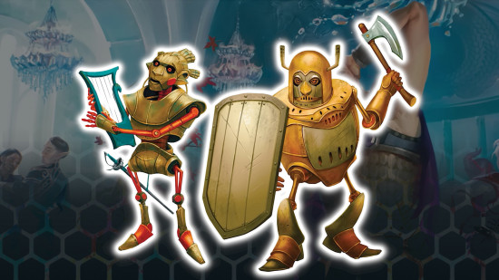
Autognome
| Size | Small |
| Speed | 30ft |
| Ability scores | +2 and +1 two different stats, or +1 any three |
| Best for | All |
| Sourcebooks | Spelljammer: Adventures in Space (2022) |
The fifth edition Spelljammer books gave us the Autognome 5e, and these pint-sized automatons are suitable for pretty much any class.
Their metal bodies give them a base armor class of 13 + your Dexterity modifier, even without armor. That's handy for anyone who isn't relying on Strength or heavy armor to protect them. Plus, the excellent 'Built for Success' ability lets you add 1d4 to any attack roll, ability check, or saving throw you make, and you can do so multiple times per day.
The Autognome's remaining abilities are a bit situational - the ability to spend Hit Dice when someone casts mending on you, plus two extra tool proficiencies and the ability to remain conscious while resting. However, this species remains an unusual yet competent all-rounder.
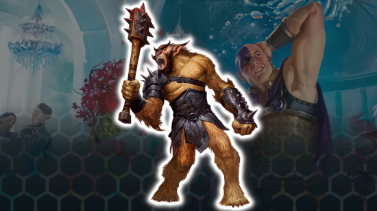
Bugbear
| Size | Medium |
| Speed | 30ft |
| Ability scores | +1 and +2 any two, or +1 any three |
| Best for | Barbarian, Monk, Warlock |
| Sourcebooks | Mordenkainen Presents: Monsters of the Multiverse (2022); Volo's Guide to Monsters (2016) |
Once one of the most recognizable DnD monsters, members of the Bugbear 5e race are also available as player-character options. They're the hairy, stocky cousins of goblins, and they have a little bit of Feywild magic to help them with skills like stealth.
As well as being proficient in stealth, Bugbears can deal a Surprise Attack (and an extra 2d6 damage) to any creature that hasn't taken a turn yet in combat. While a Rogue might seem like an obvious choice for a Bugbear, that Surprise Attack is useful for pretty much any class in battle. Bugbears also have advantage on saving throws against being charmed, but that's less relevant to choosing the right class for your build.
For full details on how you can become a big ol' Bugbear, check out our complete Bugbear 5e species guide.
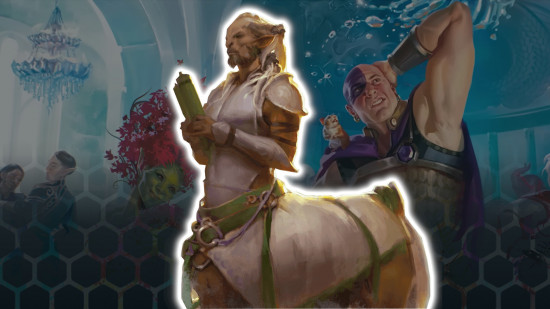
Centuar
| Size | 40ft |
| Speed | Medium |
| Ability scores | +2 and +1 two different stats, or +1 any three |
| Best for | Barbarian, Fighter |
| Sourcebooks | Mordenkainen Presents: Monsters of the Multiverse (2022); Guildmaster's Guide to Ravnica (2018) |
These half-humanoid, half-horse Fey creatures have an affinity with nature - and a powerful hind kick. As a Centaur 5e, you'll often be charging into battle - meaning that you'll move 30ft into melee range, hit with your weapons, and then get a Hooves attack with your bonus action. Your hooves are pretty hefty, dealing 1d6 plus your Strength modifier as an unarmed attack.
Centaurs can also choose to have proficiency in Animal Handling, Nature, Medicine, or Survival thanks to their Fey ties. They've got a superior carrying capacity to other creatures of their size, but please don't ask them to climb anything. The hooves make it very difficult. The hooves also limit your optimal class choices - you're best off playing frontline martial classes.
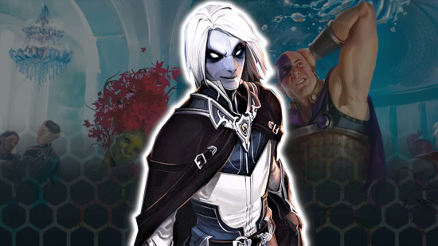
Changeling
| Size | Medium or small |
| Speed | 30ft |
| Ability scores | +2 and +1 two different stats, or +1 any three |
| Best for | Rogue, Bard |
| Sourcebooks | Mordenkainen Presents: Monsters of the Multiverse (2022); Eberron: Rising from the Last War (2019) |
A Changeling 5e has the power to completely alter their appearance as an action. Their ancestry essentially means that they have constant access to the Disguise Self spell, only with guaranteed success. As you can imagine, this means that Changelings excel in social situations - and sneaky subterfuge.
When you create a Changeling character, you can choose two extra skill proficiencies from Deception, Insight, Intimidation, or Persuasion. These additional Charisma-based skills, combined with that powerful shapeshifting ability, make the Changeling ideal for two character types in particular: the sneaky Rogue and the performative Bard.
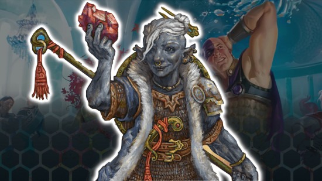
Deep Gnome
| Size | Small |
| Speed | 30ft |
| Ability scores | +2 and +1 two different stats, or +1 any three |
| Best for | Ranger, Rogue |
| Sourcebooks | Mordenkainen Presents: Monsters of the Multiverse (2022); Elemental Evil Player's Companion (2015) |
Technically, the Deep Gnome 5e is a subrace of the regular Gnome species. However, depending on which books you're reading, you can also find complete rules for a separate Deep Gnome species. Whichever mechanics you plan to use, the basic concept is the same - these are Gnomes born in and shaped by the Underdark.
These Gnomes are tricksy, so their natural ability to cast Disguise Self and Nondetection come in handy. Similarly, they'll get great use out of the Svirfneblin Camouflage feature, which gives them advantage on Stealth checks a certain number of times per long rest. Lastly, your Deep Gnome will be naturally resistant to magic, so they have advantage on Intelligence, Wisdom, and Charisma saving throws against spells.
The Deep Gnome's features complement almost any class in D&D. We'd recommend playing whichever strikes your fancy - though, if you're looking to optimize at every possible turn, the Ranger and the Rogue get the most from the Svirfneblin mix of stealth and sorcery.
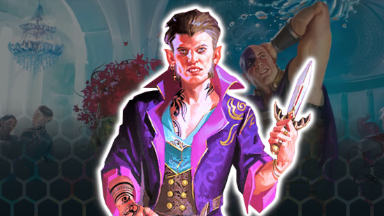
Dhampir
| Size | Medium or small |
| Speed | 35ft |
| Ability scores | +2 and +1 two different stats, or +1 any three (2014 rules only) |
| Best for | Barbarian, Ranger, Monk |
| Sourcebooks | Ravenloft: The Horrors Within (2026) |
A Dhampir is a humanoid of another species that's reached a state of undeath most commonly associated with vampires. Perhaps one of those monsters transformed your Dhampir, or maybe they inherited the curse in some other dark way. Either way, they're almost unrecognizable in their new, undead form.
Your new features include 60 feet of Darkvision, a climbing speed equal to your walking speed (which you can use hands free from level 3 onwards!), and a tasty Vampiric Bite that lets you deal damage and regain HP with your fangs. Plus, the Trace of Undeath means you have Resistance to Necrotic damage.
The original version of the Dhampir from 2021's 'Van Richten's Guide to Ravenloft' was a 'lineage', a modified version of another race. It kept their skill proficiencies and unusual speed types (flying, climbing, etc.), but all other rules were replaced with that of a Dhampir. And unlike the 2026 Dhampir, it didn't need to breathe!
Learn more in our Dhampir 5e guide.
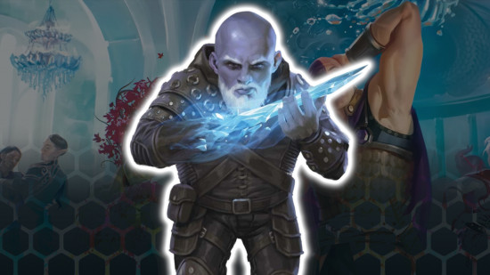
Duergar
| Size | Medium |
| Speed | 30ft |
| Ability scores | +2 and +1 two different stats, or +1 any three |
| Best for | Ranger, Paladin |
| Sourcebooks | Mordenkainen Presents: Monsters of the Multiverse (2022); Sword Coast Adventurer's Guide (2015) |
Originally a Dwarf subrace, the Duergar 5e became a separate species in Monsters of the Multiverse. Their rules are slightly different in this book, but they're still an Underdark species that shares many traits with its surface-dwelling cousins.
Duergar still have Dwarven Resilience, which gives them resistance to poison damage and advantage on saving throws against poison. They also still have 120ft of Darkvision and the ability to cast Invisibility and Enlarge/Reduce using their Duergar Magic.
The Duergar's sunlight sensitivity is (thankfully) gone, so they're not disadvantaged when adventuring during the day. They also have advantage on saving throws against being charmed or stunned. While flexible stats mean a Duergar is playable for pretty much any class, those that use magic to enhance their combat and stealth skills will maximize the Duergar's potential.
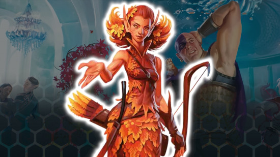
Eladrin
| Size | Medium |
| Speed | 30ft |
| Ability scores | +1 and +2 any two, or +1 any three ability scores |
| Best for | Druid, Cleric |
| Sourcebooks | Mordenkainen Presents: Monsters of the Multiverse (2022); Mordenkainen's Tome of Foes (2018) |
The Eladrin 5e are Elves that specifically come from the Feywild, and their appearance and abilities are tied to a particular season. An Eladrin might change seasons over their life or always remain the same.
Like many Elves, Eladrin have advantage on saving throws against the charmed condition. Plus, an Eladrin can teleport 30ft as a bonus action and immediately gain a particular benefit granted by their season. We're particularly keen on Spring, which lets you teleport another creature instead of yourself. Eladrin also have proficiency in Perception, and they can enter a trance instead of sleeping, finishing a long rest in just four hours.
Teleportation is an excellent ability for any character that can't do so already. Since Eladrin also have a natural lean towards Wisdom-based skills, we recommend playing a Druid or Cleric. However, thanks to their custom ability scores, an Eladrin is suitable for any class you like.
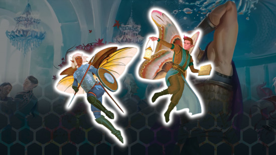
Fairy
| Size | Small |
| Speed | 30ft (walking and flying) |
| Ability scores | +1 and +2 any two, or +1 any three ability scores |
| Best for | Rogue, Druid |
| Sourcebooks | Mordenkainen Presents: Monsters of the Multiverse (2022) |
Agile, mystical, and tricksy, a Fairy 5e is gifted with spellcasting and enormous wings that let them fly as fast as they can walk. None of their spellcasting options are game-breakers, in our opinion - Druidcraft, Faerie Fire, and Enlarge/Reduce are all a bit situational. But they're a nice bonus for characters that can't otherwise cast them already, even if you can only use them once per long rest.
Because of this and their flexible ability score increases, and the chance to choose your spellcasting ability for those extra spells, Fairies make a suitable species for most builds. We'd recommend one that'll really benefit from flight - like the agile Rogue or a Druid armed with ranged area-of-effect spells.
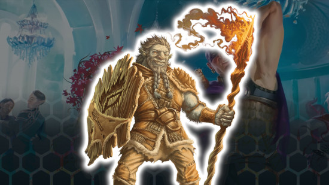
Firbolg
| Size | Medium |
| Speed | 30ft |
| Ability scores | +1 and +2 any two, or +1 any three ability scores |
| Best for | Rogue |
| Sourcebooks | Mordenkainen Presents: Monsters of the Multiverse (2022); Volo's Guide to Monsters (2016) |
The Firbolg 5e is a distant relation of the Giants. They bear some physical resemblance to their ancestors (and they do count as a Large creature when determining how much they can push, drag, lift, or carry), but they have more expertise in magic than brute strength.
They innately know how to Detect Magic 5e and Disguise Self, with fewer restrictions than the average spellcaster. As a bonus action, a Firbolg can also turn invisible until their next turn or attack begins. And their ties to the woods mean they have limited influence over beasts, plants, and other vegetation.
While all this forest flavor may draw you to the Druid or Ranger, we argue that the Rogue is a far better option for Firbolg players. Invisibility, disguises, and advantage on beast-based Charisma checks all play into what a Rogue does best.
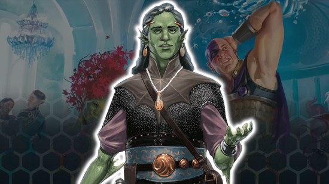
Genasi
| Size | Medium |
| Speed | 30ft |
| Ability scores | +1 and +2 any two, or +1 any three ability scores |
| Best for | Cleric, Fighter |
| Sourcebooks | Mordenkainen Presents: Monsters of the Multiverse (2022); Elemental Evil Player's Companion (2015) |
The offspring of genies and mortals, Genasi are elemental beings that manifest the power of planar magic within their blood. Although they closely resemble humans, a Genasi's elemental heritage is clearly visible.
Their gameplay abilities are almost entirely defined by their subraces.
- Air Genasi can naturally cast the Levitate spell and are resistant to lightning damage;
- Earth Genasi get a free cast of Pass Without Trace every long rest and can walk across rough terrain for no penalty;
- Fire Genasi are resistant to fire and know the Produce Flame cantrip from level one;
- Water Genasi have acid resistance, are amphibious, and can cast the Shape Water cantrip.
Despite these differences, none of the subraces is especially fixed to just one specific class. The Cleric 5e has subclasses that work with the Air Genasi and Fire Genasi, while the Earth Genasi offers minor benefits to martial classes like the Fighter.
You'll find a complete look at the ways of the Genasi in our dedicated DnD Genasi 5e species guide.
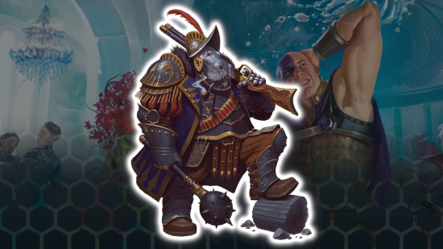
Giff
| Size | Medium |
| Speed | Walking and swimming 30ft |
| Ability scores | +2 and +1 two different stats, or +1 any three |
| Best for | Fighter |
| Sourcebooks | Spelljammer: Adventures in Space (2022) |
The Giff 5e are stocky hippo humanoids who are most commonly found traversing Wildspace. These Giff can use their Astral Spark to add extra force damage to their simple or martial weapon attacks (equal to their proficiency bonus). They can also ignore the loading property on firearms, and they have advantage on Strength-based ability checks and saving throws.
These features sound ideal for a combat-focused character. In truth, they're all at odds with each other - the Giff's Strength focus clashes with its specialization in Dex-based firearm fighting. It's not the class we'd recommend for optimal builds, but if you're keen to play a big hippo, go for a Fighter. Or perhaps a very combat-focused Artificer.
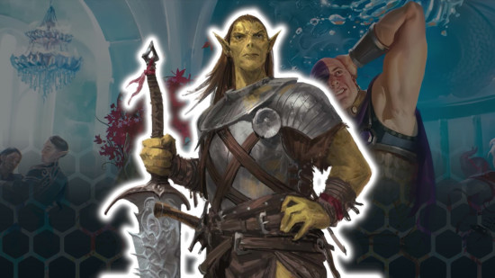
Githyanki
| Size | Medium |
| Speed | 30ft |
| Ability scores | +1 and +2 any two, or +1 any three |
| Best for | Fighter, Bard |
| Sourcebooks | Mordenkainen Presents: Monsters of the Multiverse (2022); Mordenkainen's Tome of Foes (2018) |
The Githyanki were once trapped in servitude to the Mind Flayer 5e empire, but they escaped and began new lives in the Astral Plane. Githyanki have a natural resistance to psychic damage, and all that time traveling the Astral Plane has given them profound Astral Knowledge.
This means that, during a long rest, a Githyanki gets proficiency in any skill, weapon, or tool from the Player's Handbook until their next long rest. Skill-heavy characters like the Bard can get a lot of mileage out of this.
A Githyanki automatically knows the Mage Hand 5e spell, and they pick up Jump and Misty Step as they level up. These spells can be a big help for characters that spend a lot of time in melee combat but might not have the best mobility.
You can learn more in our full Githyanki race guide.
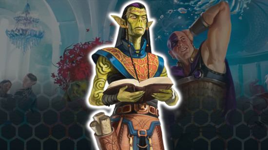
Githzerai
| Size | Medium |
| Speed | 30ft |
| Ability scores | +1 and +2 any two, or +1 any three |
| Best for | Sorcerer |
| Sourcebooks | Mordenkainen Presents: Monsters of the Multiverse (2022); Mordenkainen's Tome of Foes (2018) |
The Githzerai share their origins with the Githyanki - both gained psionic abilities while trapped in subservience to Mind Flayers. While their cousins fled to the Astral Plane, Githzerai are now found in the Ever-Changing Chaos of Limbo.
The Githzerai Psionics ability means that a Githzerai automatically knows the Mage Hand cantrip, and they learn to cast Shield and Detect Thoughts once per long rest as they level up. Psychic Resilience gives them resistance to psychic damage and Mental Discipline grants advantage on saving throws to end the charmed or frightened condition.
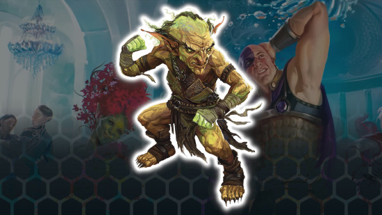
Goblin
| Size | Small |
| Speed | 30ft |
| Ability scores | +1 and +2 any two, or +1 any three |
| Best for | Fighter, Ranger, Wizard |
| Sourcebooks | Mordenkainen Presents: Monsters of the Multiverse (2022); Volo's Guide to Monsters (2016) |
While the Goblin 5e species can be found all over the multiverse, their ancient tie to the Feywild gives them advantage against the charmed condition - and their predilection for living underground gives them 60 feet of Darkvision.
Whatever their ancestry, it's their small size they most use to their advantage. Nimble Escape means they can Disengage or Hide as a bonus action, and Fury of the Small allows them to deal extra damage equal to their proficiency bonus when they successfully hit a creature of a larger DnD size.
Most builds could benefit from these abilities (except maybe the Rogue, who's able to do similar things all by themselves). We recommend choosing a Fighter or Ranger if you prefer a martial playstyle, or a Wizard for spellcasters. All benefit from the ability to dip in and out of combat, avoiding opportunity attacks and adding a nice scalable bonus to their attacks.
You can learn more about this race in our dedicated Goblin 5e guide.
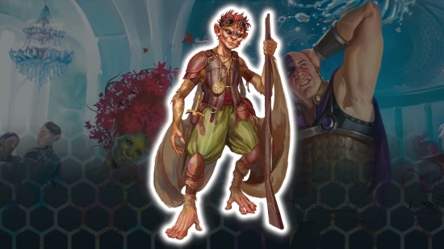
Hadozee
| Size | Medium or small |
| Speed | 30ft walking, 30ft climbing |
| Ability scores | +2 and +1 two different stats, or +1 any three |
| Best for | Any |
| Sourcebooks | Spelljammer: Adventures in Space (2022) |
The Hadozee 5e are humanoids that share the physical features of monkeys, and they have wing-like skin flaps that let them glide in the air. They're one of D&D's more troubled species, as Wizards of the Coast had to retcon them as soon as they were added to 5e - both for balance and to address racist undertones.
The original, printed version of a Hadozee's Glide ability let them move five feet horizontally for every foot they descended in the air - all with no movement cost. Digital versions and later printings of the Spelljammer books changed this to let you glide horizontally up to your walking speed if you're falling at least ten feet above the ground.
In both versions, Hadozees can also use their Dexterous Feet to manipulate objects, pick up Tiny objects, or interact with doors. Hadozee Dodge also lets you spend a reaction and roll a d6 to reduce incoming damage. These abilities aren't particularly suited to any one class, but the Hadozee's stats are flexible, so they can suit a range of builds.
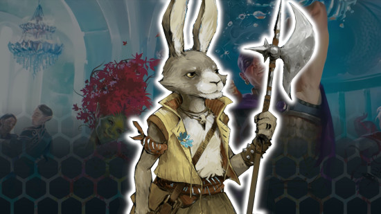
Harengon
| Size | Medium or small |
| Speed | 30ft |
| Ability scores | +1 and +2 any two, or +1 any three |
| Best for | Bard, Rogue, Ranger |
| Sourcebooks | Mordenkainen Presents: Monsters of the Multiverse (2022) |
A Harengon is a Fey being that shares the physical features and agility of a regular rabbit. Leporine Senses gives Harengon proficiency in Perception, while Hare-Trigger allows them to add their proficiency bonus to initiative rolls. Thanks to Lucky Footwork, Harengon can also make a last-ditch effort to recover on a failed Dexterity saving throw - a d4 can be rolled and added to the save, potentially changing that failure into a success.
The Harengon can also jump a number of feet equal to five times their proficiency bonus as a bonus action. This doesn't trigger opportunity attacks either.
The Harengon's impressive dexterity lends itself to a wide variety of builds. Supporting classes like the Bard will find it very useful to get ahead in the initiative order, as they can cast their buff spells early. Combat-focused characters benefit from this too, but the Harengon's ability to move around the battlefield easily and without provoking opportunity attacks helps you set up a strong offense.
For even more bunny bits, hop along to the full Harengon 5e guide.
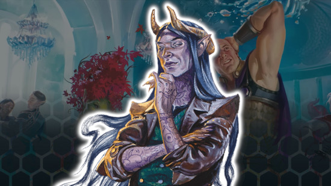
Hexblood
| Size | Medium or small |
| Speed | 30ft |
| Ability scores | +1 and +2 any two, or +1 any three (2014 rules only) |
| Best for | Rogue, Warlock, Fighter |
| Sourcebooks | Ravenloft: The Horrors Within (2026) |
A Hexblood is a creature from another species that has been significantly altered by Fey magic, witchcraft, or some other equally eldritch occurrence. They partially resemble the creature they once were, but the Hexblood now also shares physical features and abilities with a Hag.
While some minor details of their past life remain the same (speed, skills, etc), the majority of the rules for the race are replaced with those of the Hexblood lineage. In this case, the Hexblood gains 60ft of Darkvision and the ability to turn their hair, teeth, or nails into a magical token as a bonus action. This token can be used for telepathic communication and remote scrying. A Hexblood can also cast Disguise Self and Hex to further up the trickery factor.
Learn more in our Hexblood 5e guide.
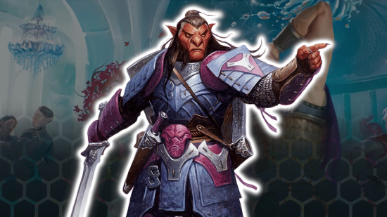
Hobgoblin
| Size | Medium |
| Speed | 30ft |
| Ability scores | +1 and +2 any two, or +1 any three |
| Best for | Paladin, Fighter |
| Sourcebooks | Mordenkainen Presents: Monsters of the Multiverse (2022); Volo's Guide to Monsters (2016) |
Like their Goblin cousins, each Hobgoblin 5e has an ancestral tie to the Feywild. This mainly manifests as 60 feet of Darkvision and an advantage against being charmed, but Hobgoblins also have one extra Fey Gift, which lets them use Help as a bonus action.
Once they reach third level, this ability comes with extra benefits. Every time a Hobgoblin helps an ally, they can do one of the following:
- Give themselves and the helped creature temporary hit points equal to 1d6 plus the Hobgoblin's proficiency bonus
- Increase their and the helped creature's walking speed by ten feet until the start of the Hobgoblin's next turn
- Until the start of the Hobgoblin's next turn, the helped creature gives the first target they successfully attack disadvantage on their next attack roll made within the next minute
Hobgoblins also have the Fortune from the Many feature, which lets them add a bonus to a failed roll that gets bigger depending on how many allies they have. Their flexible ability to Help is great for any class that doesn't need to use its Bonus action and particularly one that will be mixing it up on the frontline - perfect Paladin material
You can learn more about the Hobgoblin 5e in our dedicated guide.
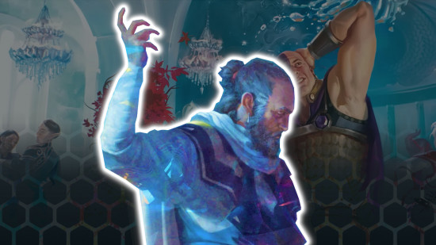
Kalashtar
| Size | Medium |
| Speed | 30ft |
| Ability scores | +2 Wisdom, +1 Charisma |
| Best for | Cleric, Druid |
| Sourcebooks | Eberron: Rising from the Last War (2019) |
Hailing from the land of Eberron, the Kalashtar 5e closely resemble humans. However, they're also partly descended from spirits that wander the plane of dreams, and this gives them psychic powers that set them apart.
All Kalashtar have resistance to psychic damage and advantage on Wisdom saving throws. Plus, their Mind Link ability allows them to speak telepathically with a creature they can see, with increasing range as they level up. Finally, Kalashtar are protected from magical effects that force them to dream (though they can still be targeted by spells that put them to sleep).
The set stats for the Kalashtar limit them to Wisdom-based characters (or maybe Charisma, if you really want to play a Bard). However, if you use the custom origins rules from Tasha's Cauldron of Everything, you can give a Kalashtar any stat buffs you want. We'd recommend picking a martial class like the Fighter or the Barbarian, as they're famously weak to psychic attacks.
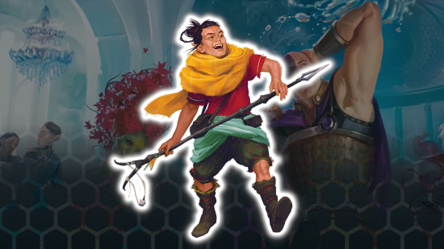
Kender
| Size | Small |
| Speed | 30ft |
| Ability scores | +2 and +1 two different stats, or +1 any three |
| Best for | Druid, Paladin, Ranger |
| Sourcebooks | Dragonlance: Shadow of the Dragon Queen (2022) |
Kender 5e are Gnome-like people from the Dragonlance setting who are best known for their curiosity and bravery. In older editions, they were also known for kleptomania, but the newest version of the species has moved away from this stereotype.
A Kender's bravery means that they have advantage on saving throws to avoid being frightened, and they can choose to automatically pass one of these saves once per long rest. They're also naturally proficient in Insight, Investigation, Sleight of Hand, Stealth, or Survival, which makes them handy scouts and social allies.
Perhaps their most impressive ability is Taunt. This bonus action forces a target within 60 feet to make a Wisdom saving throw, and it has disadvantage on attack rolls against everyone except the Kender if it fails. Taunt is a pretty great defensive tactic, but you'll need high Intelligence, Wisdom, or Charisma to use it.
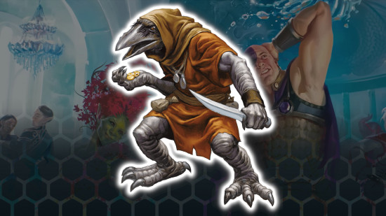
Kenku
| Size | Medium |
| Speed | 30ft |
| Ability scores | +1 and +2 any two, or +1 any three |
| Best for | Bard |
| Sourcebooks | Mordenkainen Presents: Monsters of the Multiverse (2022); Volo's Guide to Monsters (2016) |
Kenku 5e are raven-like in appearance and, while they can't fly, they're experts at mimicry. This power gives them advantage on ability checks to copy the handwriting or craftwork of another.
Plus, their Mimicry ability makes it extra difficult to tell the Kenku's imitative voices apart from the real deal. Creatures that hear them mimic a voice must pass a Wisdom (Insight) to tell it's not authentic - this has a difficulty class (DC) of eight plus your proficiency bonus and Charisma modifier.
Thanks to their exceptionally good memory, a Kenku also has proficiency in two skills of your choice. They can also choose to gain advantage on a check for one of these skills a number of times equal to their proficiency bonus per long rest.
Read our full Kenku 5e species guide for more.
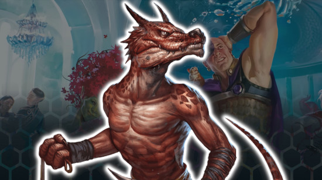
Kobold
| Size | Small |
| Speed | 30ft |
| Ability scores | +1 and +2 any two, or +1 any three |
| Best for | Fighter, Rogue |
| Sourcebooks | Mordenkainen Presents: Monsters of the Multiverse (2022); Volo's Guide to Monsters (2016) |
Kobolds are rascally reptilian humanoids who are best known for trapping, tunneling, and treasure-hunting. As a playable species, the Kobold is highly versatile. Want to try some sorcery? Want to avoid being frightened? Want proficiency in Arcana, Medicine, Investigation, Survival, or Sleight of Hand? All of these are possible choices thanks to the Kobold Legacy ability.
Kobolds are best suited to builds that mix melee fighting with a little bit of spellcasting - so the Rune Knight Fighter or Arcane Trickster Rogue are great choices. Though diminutive, their Draconic Cry grants them and their allies advantage against all enemies within ten feet, an excellent little buff you can use multiple times each long rest and a very good reason to be on or near the front lines of combat.
For a more detailed look at the Kobold race, be sure to take a peek at our Kobold 5e species guide.
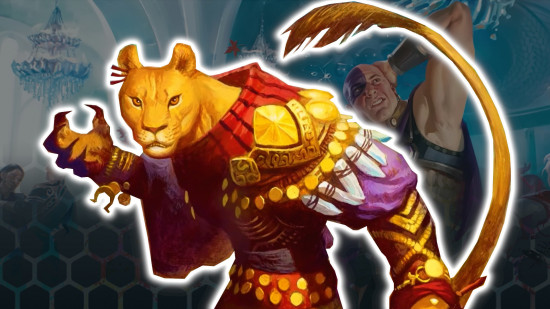
Leonin
| Size | Medium |
| Speed | 35 feet |
| Ability scores | +2 Constitution, +1 Strength |
| Best for | Barbarian, Fighter, Paladin |
| Sourcebooks | Mythic Odysseys of Theros (2020) |
Originating from the MTG plane of Theros, the Leonin 5e gives your character the looks and powers of a lion. Standard Darkvision and an extra skill proficiency (Athletics, Intimidation, Perception, or Survival) are neat extras. However, you're not likely to use your Claws attack often, given that it only does 1d4 + your Strength modifier in slashing damage.
Luckily, the Leonin's Daunting Roar is a great ability. It's a bonus action that frightens creatures within 10 feet if they fail a Wisdom saving throw. Having a high Constitution modifier makes this save harder to beat, so we'd recommend pairing the Leonin race with a tank-y fighting class.
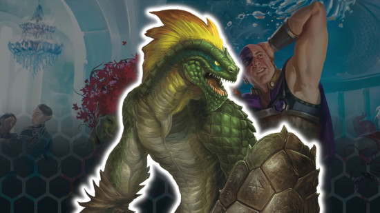
Lizardfolk
| Size | Small |
| Speed | 30ft |
| Ability scores | +1 and +2 any two, or +1 any three |
| Best for | Druid |
| Sourcebooks | Mordenkainen Presents: Monsters of the Multiverse (2022); Volo's Guide to Monsters (2016) |
The Lizardfolk 5e is a peculiar species. They're particularly adept at Wisdom-based skills, as well as skulking around unseen. Given that their natural armor is also based on their Dexterity modifier, that implies that Lizardfolk should focus on a Ranger-like playstyle, right?
Well, they also have a strong bite in their arsenal that deals 1d6 plus their Strength modifier in damage. This can be done as a bonus action, and the Lizardfolk can heal themselves by feeding on the flesh they chomp. To optimize your scaly character, you'd need to focus on three stats that have no relation to each other in the world of D&D.
The Druid is a good choice, as it benefits from the natural armor and the extra proficiencies, and if you do find yourself keen to bite someone, your abilities should still work while you're in Wild Shape form. Alternatively, the Rogue Scout subclass - aka the zero magic ranger - is a good foundation for a Lizardfolk skill monkey.
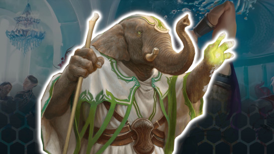
Loxodon
| Size | Medium |
| Speed | 30 feet |
| Ability scores | +2 Constitution, +1 Wisdom |
| Best for | Druid, Cleric |
| Sourcebooks | Guildmaster's Guide to Ravnica (2018) |
Hailing from the Magic: The Gathering plane of Ravnica, the Loxodon 5e is a humanoid-elephant species known for its powerful trunk. Said trunks can be used to lift items and interact with objects, which is extra-impressive thanks to the Loxodon's heightened carrying capacity.
Perhaps more excitingly, this trunk can also make unarmed strikes in combat. Combine this with the Loxodon's natural armor of 12 + their Constitution modifier, and you've got a hardy wisdom caster.
The Loxodon's advantage on Perception, Survival, and Investigation checks mean they're also capable scouts. The Druid is our top class pick here, but Cleric and Ranger make just as much sense.
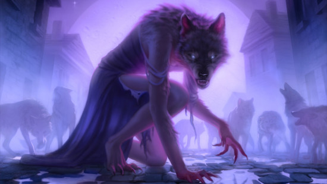
Lupin
| Size | Medium or Small |
| Speed | 30 feet |
| Ability scores | N/A |
| Best for | Monk |
| Sourcebooks | Ravenloft: The Horrors Within (2026) |
Half-wolf, half-another-species hybrids, Lupins are like werewolves who got stuck halfway through their transformation in that awkward wolf-person stage. It's not a bad shape for adventuring in, though.
Lupins get Darkvision out to 60 feet, have improved Unarmed Strikes thanks to those slashing talons, and can let out a terrifying and disorienting howl. Their werewolf instincts also make them proficient in Perception, Stealth, or Survival.
The Lupin's ability to deal damage and shove enemies with the same unarmed strike is going to synergise best with the Monk - but it's a small buff that you could choose to overlook. The strength of their howl depends on Constitution, which every class benefits from improving.
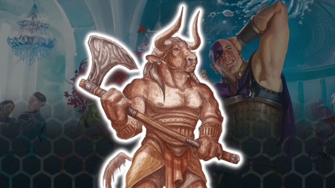
Minotaur
| Size | Medium |
| Speed | 30ft |
| Ability scores | +1 and +2 any two, or +1 any three |
| Best for | Barbarian, Fighter |
| Sourcebooks | Mordenkainen Presents: Monsters of the Multiverse (2022); Guildmaster's Guide to Ravnica (2018) |
The Minotaur 5e race is said to hail from the deadly mazes of the Planescape setting. Supposedly tasked with patrolling the magical mazes of the Lady of Pain, Minotaurs have developed an excellent sense of direction - as well as some handy combat skills. While there's some scout potential, most of the Minotaur's abilities focus on brute strength.
Labyrinthine Recall gives your character advantage on any Survival check when navigating or tracking. A Minotaur can also use their horns to make unarmed strikes that deal 1d6 plus their Strength modifier in piercing damage. Plus, Goring Rush allows you to make a Horns attack as a bonus action if you Dash for at least 20 feet.
Alternatively, your Minotaur could use Hammering Horns. After a successful melee attack, this ability lets you push the target with your horns as a bonus action. As long as they're within five feet, aren't more than one size larger than you, and don't succeed on a Strength saving throw, your target is pushed ten feet away.
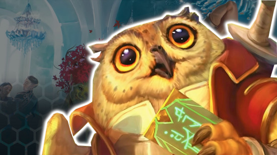
Owlin
| Size | Medium or small |
| Speed | 30ft (walking and flying) |
| Ability scores | +2 and +1 two different stats, or +1 any three |
| Best for | Rogue, Ranger |
| Sourcebooks | Strixhaven: A Curriculum of Chaos (2021) |
An Owlin 5e is, as the name implies, a humanoid that resembles a fluffy, wise owl. Such avian lineage has plenty of perks, including twice the Darkvision most species have, as well as automatic proficiency in stealth. Combine this with the power of flight, and you've got a character that can swoop in silence, swiftly taking out foes.
These traits make the Owlin a great pick for a Ranger or a Rogue. Their flexible ability scores mean you could choose Owlins for any build, but we don't think a Barbarian will have quite the same amount of fun with those racial traits. Plus, their flight prevents them from wearing most armor, so beefier frontliners won't be able to enjoy both wings and full plate.
Check out our full Owlin 5e guide to learn more.
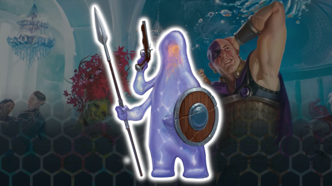
Plasmoid
| Size | Medium or small |
| Speed | 30ft |
| Ability scores | +2 and +1 two different stats, or +1 any three |
| Best for | Monk |
| Sourcebooks | Spelljammer: Adventures in Space (2022) |
The Plasmoid 5e is as close as it gets to playing a Gelatinous Cube. These sentient piles of goo stand out from the crowd thanks to their ability to shapeshift with ease. The Amorphous ability lets them squeeze through any space at least one inch wide - impressive.
The downside is that you can't wear or carry anything while squeezing through that space. The armorless DnD Monk 5e is a natural choice, and they can also benefit from the Plasmoid's advantage on grapple checks.
Even better, a Plasmoid can excrete psuedopods that can manipulate objects for you from a distance. That's a scouting ability that, while it might unsettle your party, will certainly be useful to your allies.
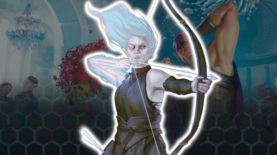
Reborn
| Size | Medium or small |
| Speed | 30ft |
| Ability scores | +2 and +1 two different stats, or +1 any three (2014 rules only) |
| Best for | Barbarian, Bard Rogue |
| Sourcebooks | Ravenloft: The Horrors Within |
A Reborn is a humanoid of a different species that died and, against all odds, returned to life. Their new physical form bears some mark of this event - perhaps a ghostly glow, stitches from being pieced back together, or skeletal limbs. Most Reborn have also lost the memories of their past life.
Your character doesn't need to eat, drink, sleep, or breathe, and can't gain Exhaustion levels those ways, and they have advantage on death saving throws. They're also resistant to poison, cold, or necrotic damage and have advantage on saves against disease or the poisoned condition. Plus, they can finish a long rest in four hours and occasionally add a d6 to their skill checks - thanks, corpse-like body and missing memories!
The version of this species originally printed in 2021's 'Van Richten's Guide to Ravenloft' was a lineage rather than a race, which took a few minor details (skill proficiencies and unusual speeds, for example) from another DnD race. Everything else is Reborn rules, though.
Learn more in our Reborn 5e guide.
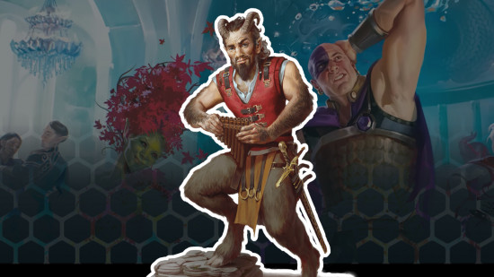
Satyr
| Size | Medium |
| Speed | 35ft |
| Ability scores | +2 and +1 two different stats, or +1 any three |
| Best for | Bard, Paladin |
| Sourcebooks | Mordenkainen Presents: Monsters of the Multiverse (2022); Mythic Odysseys of Theros (2020) |
The whimsical, goat-like Satyr 5e have their origins in the Feywild, and they're full Fey creatures rather than humanoids. Their natural proficiency with Performance, Persuasion, and a musical instrument may make them seem like natural Bards. However, the Satyr's other abilities suit a range of builds.
Magic Resistance grants advantage on saving throws against spells, which is handy for anyone battling a mage. Satyrs also have maneuverability and martial power, as their Satyr's Ram feature deals 1d6 plus their Strength modifier in bludgeoning damage. Plus, they can make Mirthful Leaps, extending their jump distance by their Strength stat.
Neither are game-breaking abilities, but if you want to make use of them, we'd recommend playing a Paladin. Extra movement and an always-available melee attack are pretty decent backup plans.
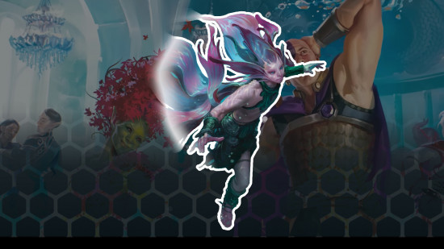
Sea Elf
| Size | Medium |
| Speed | 30ft (swimming and walking) |
| Ability scores | +2 and +1 two different stats, or +1 any three |
| Best for | Ranger, Cleric |
| Sourcebooks | Mordenkainen Presents: Monsters of the Multiverse (2022); Mordenkainen's Tome of Foes (2018) |
A Sea Elf 5e is, yes, an Elf that can swim fast and breathe underwater. They're the Aquamen of the Forgotten Realms, able to communicate with swimming beasts and resistant to cold damage.
This water-dwelling humanoid is like its land-based brethren in many ways. Mechanically, we're talking about Darkvision, advantage on rolls against being charmed, and the ability to go into a trance rather than sleep.
While Sea Elves are particularly perceptive and can swap weapon proficiencies on a regular basis, they don't offer many unique abilities. Unless you're part of an adventure that takes place in or under water, there aren't too many advantages to choosing this species.
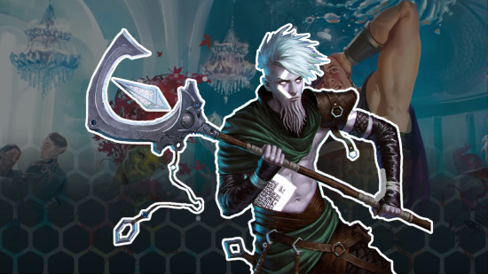
Shadar-kai
| Size | Medium |
| Speed | 30ft |
| Ability scores | +2 and +1 two different stats, or +1 any three |
| Best for | Any |
| Sourcebooks | Mordenkainen Presents: Monsters of the Multiverse (2022); Mordenkainen's Tome of Foes (2018) |
The Shadar-kai 5e is a species of Elf native to the Shadowfell. Their appearance and abilities have been altered by life in this grim and dark plane, and many of them pledge service to its most powerful deity, The Raven Queen.
In fact, all Shadar-kai have the Blessing of the Raven Queen, an ability that allows them to teleport as a bonus action. After level three, this even grants the Shadar-kai resistance to all damage types for a turn.
As creatures of the night, they're also naturally resistant to necrotic damage and able to see in the dark. And because they're Elves they share many species benefits with their cousins - trance resting, keen senses, fey ancestry, and so on.
Fully customizable ability score increases, plus several free teleports per long rest, mean that the Shadar-kai is an excellent option for any class. If you want to fully optimize, aim for a class that can't already cast Misty Step but would benefit from hopping in and out of melee range.
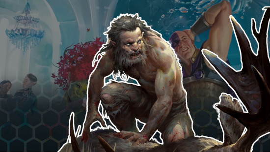
Shifter
| Size | Medium |
| Speed | 30ft |
| Ability scores | - |
| Best for | Barbarian, Fighter |
| Sourcebooks | Mordenkainen Presents: Monsters of the Multiverse (2022); Eberron: Rising from the Last War (2019) |
The Shifter 5e race is often called the 'weretouched' thanks to their lycanthrope ancestors. Since they're only part were-beast, they still have a humanoid appearance, but perhaps with a slightly more bestial look. However, they can also partially transform into a werewolf-like form, giving them some formidable battle abilities.
Their Shifting ability gives this species one of several beastly forms, which come with one of four different abilities. Big beastly shifters get Beasthide, granting temporary hit points and a +1 to the Shifter's armor class.
The other options are Longtooth, giving an unarmed fang attack, Swiftstride, granting extra speed and letting you move without triggering opportunity attacks when an enemy stops five feet from you, and Wildhunt, which gives an advantage on Wisdom checks and prevents close-up attacks against you being made with advantage.
Plenty of these powers would benefit a canny martial character, but I can also picture a caster using Swiftstride to get out of trouble.
Simic Hybrid
| Size | Medium |
| Speed | 30 feet |
| Ability scores | +2 Constitution, +1 any other stat |
| Best for | Barbarian, Monk |
| Sourcebooks | Guildmaster's Guide to Ravnica (2018) |
A Simic Hybrid 5e is a humanoid who has been infused with the traits of animals (usually amphibians, reptiles, crustaceans, or fish) transforming them into a unique species. Apart from Darkvision, Simic Hybrids only gain one species feature, but they manage to do a lot with it.
All Simic Hybrids start play with either: a climbing speed; a swimming speed and the ability to breathe underwater; or the power to sprout fins that can glide and reduce fall damage. Later, at level five, these characters can choose a different option from this list - or they can pick from a pile of new powers.
This includes basic bonuses like a +1 to your armor class, as well as some more elaborate options. Some Simic Hybrids can spray acid as an action, with the 2d10 damage dealt increasing as they gain level ups.
Others can grow two entirely new appendages, which are perfect for making unarmed strikes and grapples as a bonus action. This used to make the species perfect for Monks, but the 2024 version of the class can perform these feats anyway - so we'd stick to builds that have less to do with their bonus actions.
Tabaxi
| Size | Medium |
| Speed | 30ft walking and climbing |
| Ability scores | +1 and +2 any two, or +1 any three |
| Best for | Rogue, Monk |
| Sourcebooks | Mordenkainen Presents: Monsters of the Multiverse (2022); Volo's Guide to Monsters (2016) |
All Tabaxi were created by the feline Cat Lord, but two of them are rarely alike. Despite the huge variation in appearances and abilities, there are two things that all Tabaxi excel in - agility and stealth.
For example, all Tabaxi have the power to move double their usual speed on a turn (though they'll need to spend a turn standing still to restore that power). Their cat-like claws offer an alternative unarmed attack method, dealing 1d6 plus their Strength modifier in damage.
Plus, these cunning cats all have proficiency in Perception and Stealth. Combine this with 30 feet of climbing speed, and you've got an excellent species for Scout characters.
Check out our Tabaxi 5e species guide for more details.
Thri-kreen
| Size | Medium or small |
| Speed | 30ft |
| Ability scores | +2 and +1 two different stats, or +1 any three |
| Best for | Ranger, Rogue, Fighter |
| Sourcebooks | Spelljammer: Adventures in Space (2022) |
The Thri-kreen 5e is a giant space bug with four arms and telepathic powers. That's a concept that's bound to inspire plenty of interesting D&D characters. Plus, thanks to the Thri-kreen's funky arms, they have a lot of potential for interesting character builds.
Your Secondary Arms ability lets you use your two smaller arms to manipulate objects, interact with doors and containers, pick up tiny objects, or wield light weapons. That last one is key - you can now wield weapons and shields with hands left over for spellcasting, extra weapons, and so on.
Tortle
| Size | Medium |
| Speed | 30ft |
| Ability scores | +1 and +2 any two, or +1 any three |
| Best for | Druid, Ranger |
| Sourcebooks | Mordenkainen Presents: Monsters of the Multiverse (2022); Explorer's Guide to Wildemount (2020); The Tortle Package (2017) |
The Tortle 5e race may look like a tortoise, but there's nothing slow or dull about them. They're a particularly hardy species, with a natural armor class of 17 (though they can't wear regular armor). A Tortle gains even more defensive power from their signature shell, which they can retreat into to gain advantage on Strength and Constitution rolls.
Tortles can choose from plenty of Wisdom-based and Scout-friendly skill proficiencies. Combine this with their extra defenses, and you've got a species that can make your standard Druid or Ranger build far more durable.
To learn more, check out our DnD Tortle 5e guide.
Triton
| Size | Medium |
| Speed | 30ft walking, 30ft swimming |
| Ability scores | +2 and +1 two different stats, or +1 any three |
| Best for | Any |
| Sourcebooks | Mordenkainen Presents: Monsters of the Multiverse (2022); Volo's Guide to Monsters (2018) |
If you're playing a sea-faring campaign, the Triton 5e is a handy ally to have. Their Amphibious nature means they can breathe air and water, and Emissary of the Sea lets them share basic ideas with creatures that have a swimming speed.
Most of the Triton's unique features offer basic utility. Darkvision is always nice to have, and Guardian of the Depths grants resistance to cold damage. Plus, thanks to Control Air and Water, you can cast Fog Cloud, Gust of Wind, and Water Walk (spell slots optional).
These spells aren't going to break any character builds, and they don't push the Triton towards any particular class. If you're planning to play a Triton, you're probably not planning to power-build anyway - so pick the class that calls to your water-loving heart.
Vedalken
| Size | Medium |
| Speed | 30 feet |
| Ability scores | +2 Intelligence, +1 Wisdom |
| Best for | Wizard, Artificer |
| Sourcebooks | Guildmaster's Guide to Ravnica (2018) |
Vedalken 5e are partially amphibious creatures who, apart from their blue skin and lack of hair, closely resemble tall humans. Their most powerful ability isn't particularly flavorful, but it has an explosive mechanical effect. Vedalken have advantage on all Intelligence, Wisdom, and Charisma saving throws, meaning they're particularly well-defended against magical effects.
Vedalken can also breathe underwater for up to one hour (once per long rest), but this ability pales in comparison with that first trait. Protection against magic is a buff for pretty much any D&D character, after all.
If you need help narrowing down your choices, look to the Vedalken's proficiencies for suggestions. The species is proficient in an extra tool, plus one skill from this list: Arcana, History, Investigation, Medicine, Performance, and Sleight of Hand. This implies a slight advantage for Intelligence-based casters and skill-focused characters - though a Vedalken Barbarian is still perfectly viable.
Verdan
| Size | Small or medium |
| Speed | 30 feet |
| Ability scores | +2 Charisma, +1 Constitution |
| Best for | Sorcerer, Warlock, Bard |
| Sourcebooks | Acquisitions Incorporated (2019) |
Introduced by Acquisitions Incorporated, the Verdan 5e evolved from goblinoids, though they're often confused for Half-Elves. Whatever their origin, they're best known for their ability to speak telepathically with any creature they can see within 30 feet.
Verdan are also proficient in Persuasion, as well as Wisdom and Charisma saving throws. They're an excellent choice for Charisma casters, though many characters could take advantage of that extra protection against spells.
We'd recommend choosing the Verdan if your preferred class is a bit squishy. Their Black Blood Healing ability allows them to reroll a 1 or 2 on a Hit Dice roll, which will help keep you on your feet between fights.
Warforged
| Size | Medium |
| Speed | 30ft |
| Ability scores | +2 Constitution, +1 one other score |
| Best for | Artificer, Barbarian, Cleric |
| Sourcebooks | Eberron: Rising from the Last War (2019) |
Members of the Warforged 5e race were once mindless automaton soldiers in the DnD setting of Eberron, but at some point, they gained sentience. Now they're ready to join an adventuring party, armed with their newfound emotions and an artificial body that's ideal for soaking up damage.
Warforged don't need to do pesky mortal things like eat, drink, breathe, or sleep, but they do require rest and healing like any other humanoid. Being made of wood and metal, they're less affected by poisons and they're blessed with a boosted armor class. They can also meld their DnD armor of choice to their body so enemies can't remove it.
To learn more about the Warforged 5e, here's our full guide to the species.
Yuan-ti
| Size | Medium or small |
| Speed | 30ft |
| Ability scores | +2 and +1 two different stats, or +1 any three |
| Best for | Any |
| Sourcebooks | Mordenkainen Presents: Monsters of the Multiverse (2022); Volo's Guide to Monsters (2016) |
Part human and part snake, the Yuan-ti 5e can often be distinguished by their serpent eyes, noses, or tongues. These snake-like features come with plenty of perks, including Darkvision, resistance to poison damage, and advantage on rolls against the poisoned condition.
Yuan-ti also gain serpentine spellcasting powers, meaning they can cast Poison Spray, Suggestion, and Animal Friendship (though that last one only works on snakes).
Any adventurer can benefit from the Yuan-ti's handy resistances, but these species traits are a little underwhelming, and none lend themselves well to a particular class. If we were going purely on flavor, we'd make a Swarmkeeper Ranger who can summon an army of slithering friends.
Got a D&D character in mind already? Here are the best DnD campaigns and DnD one shots you could play them in. We can also recommend some other tabletop RPGs to try if you want to go beyond D&D.
Originally published on Wargamer.


Leave a Comment